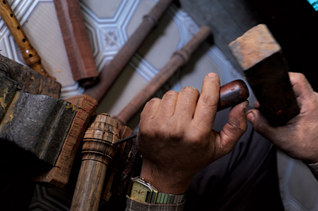
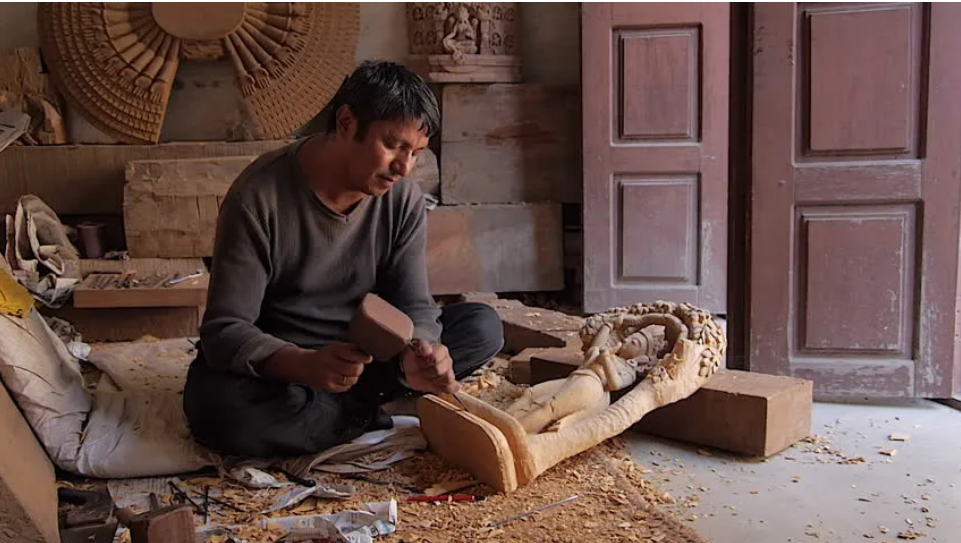
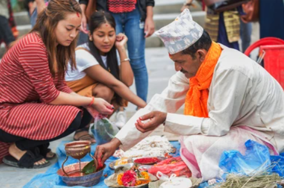

At Artisan Heritage, we celebrate the timeless craftsmanship and artistic legacy of Nepal. Our platform is dedicated to bringing the beauty and uniqueness of handmade artifacts, sculptures, and art pieces to a global audience while supporting the skilled artisans who create them
We are a passionate team dedicated to preserving Nepal’s rich cultural heritage and bridging the timeless art of craftsmanship to the global market. From detailed Thangka paintings to intricately carved wood sculptures, we curate exceptional pieces that represent Nepal's artistic excellence and creativity. Our mission is to offer not just products, but a story — the story of Nepal's skilled artisans and their unwavering dedication to their craft.
At Artisan Heritage, devotion infuses our craft. Each statue, guided by patient and precise hands, is consecrated before reaching you, invoking blessings of spiritual fulfillment. Infused with years of charm, love, and commitment, every piece enriches your surroundings, a value far more than tangible beauty.
Every purchase you make helps preserve Nepal's cultural heritage and supports the livelihoods of skilled craftsmen. By choosing Artisan Heritage, you actively take part in bringing exceptional beauty and spiritual craftsmanship to the world. Your purchase makes a difference—thank you for being a part of this journey!